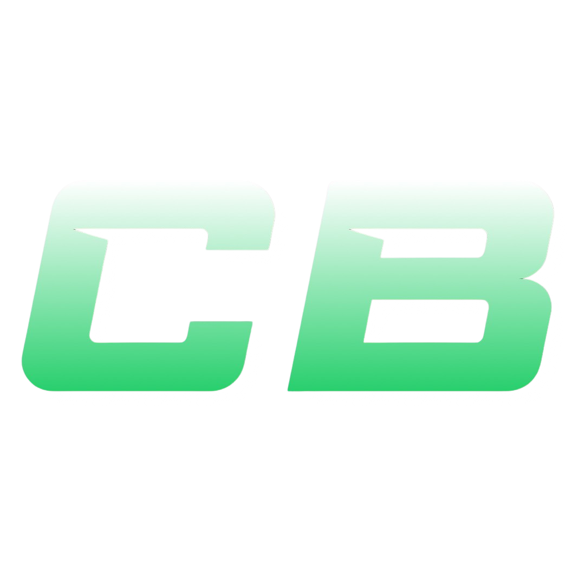
About Me
Hello my name is Carter, I am 15 years of age and soon to be a Sophomore. I was born & raised in Bronx, New York as the youngest sibling. Growing up, I always wanted to have a sports-related job because sports were always my passion. I'll touch more into my favorite topics later, but to briefly overview it, my favorite things to do are; video editing, playing sports, making clothing on Roblox, traveling and spending time with family and friends.
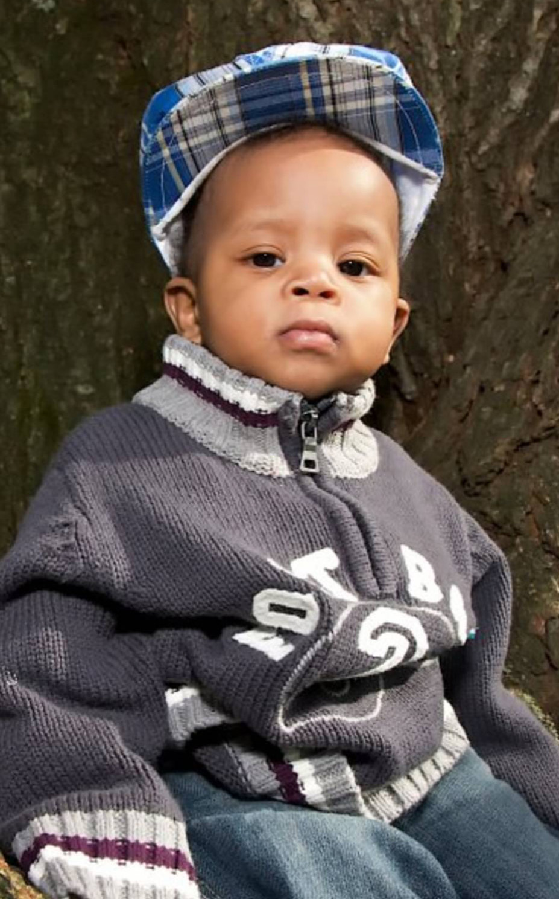
Hidden Genius Experience
My Hidden Genius Experience has been quite good. I've enjoyed making friends and learning beneficial skills such as coding and programming. I love being around all the staff, I appreciate their care for us and the help that we rceieve from them. Ms. Cydni always brings great vibes and hooks us up with good food daily, Ms. Moriah is always there for us if we need to talk, and Asa is always a large part of my coding journey as he is very helpful to all of us. This summer has been fun, they don't overload us with work and I'm excited to continue this 15-month commitment.
Goals of Mine
My current goals at the moment are; getting hundreds on TikTok, I am currently at 10.7k followers and I needed to reach 10k to make money. On July 29th, I achieved the 10,000, making me eligible to join TikTok's creator fund program. So now my goal is to make a good amount per month and have it in my savings. I would also love to make my money off of roblox clothing, I am current at 19,000 robux out of 30k, so roughly 63%. After I make the 30k, I will be transferring it to 105 dollars. Just overall getting money for stuff that I enjoy is really a goal of mine, even if its a side thing. I would like to take leadership on the court during my basketball season, and overall I want to improve my time management.
Click the categories below to learn more about me and my passions!
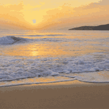
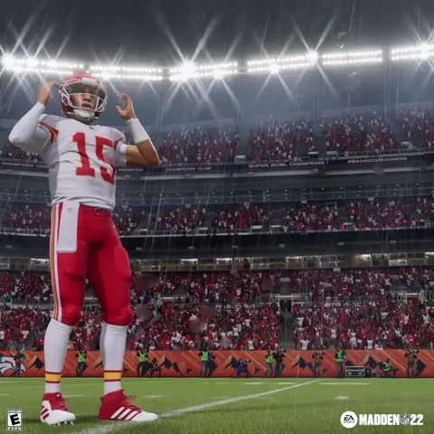
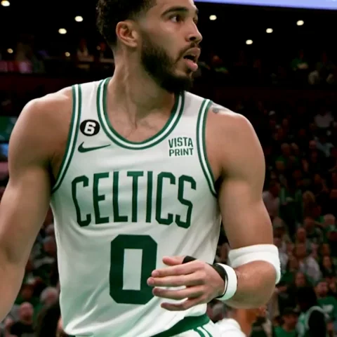
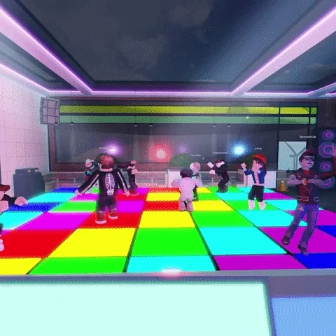
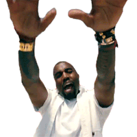
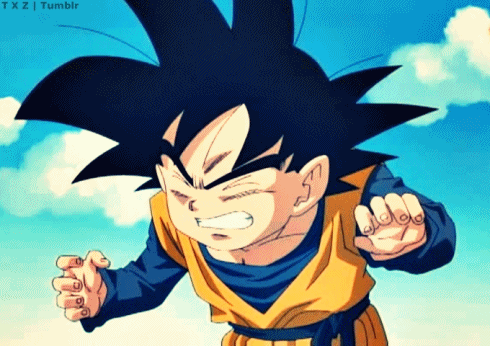
 ×
×
My Travels
My first taste of traveling was in 2015, where me and my family went on a cruise. We visited Honduras, Belize and I don't remember much more because I was like 5 or 6. In 2017, we ended up moving to Egypt. I lived in Egypt for a year and I loved it. The friends, vacations and overall, it was an enjoyable country. After moving from Egypt, we had moved to China for about 2 years up until COVID season started. During our time in China we visited the Phillipines in Dec 2019, and Thailand in summer 2019. When COVID started, streets were empty there. We ended up hopping from the Phillipines to Thailand to Malaysia, all because of Covid reasons. After that we moved to Abu Dhabi around the summer of 2020. We didn't get to enjoy the place much because of restrictions. After that we moved back to the US in 2021. Overall traveling has given me a very different view on the world. TV shows some of these places as terrible places to live, but looking back, they've helped me realize that traveling brings so much knowledge, and I enjoyed my journies it a lot.
 ×
×
Gaming
Growing up, I was born into a gaming household, filled with a gaming family all on Xbox and I followed in their footsteps. My favorite game ever might be 2018-2020 Fortnite, but my current favorite games are CFB 25, Madden and Roblox, but all-time games I'd say 2K, Call-Of-Duty, Fortnite, Madden and I have no clue for my 5th choice. It could be maybe a gears of war, or maybe a WWE game, or even a GTA. So many choices and I can't decide. I especially love sports games because I think it's a bit evident that I'm a sports fan.
 ×
×
My Sports
Once again, I grew up in a sports loving household where my dad was a Celtics and Dolphins fan because of Bird and Marino back in the day. I decided to follow his footsteps again and become a fan of basketball. Up until 2020 I really wasn't a football fan, but now it's my favorite sport to watch. Recently I've started branching into baseball and I actually enjoy it. I decided to be a Yankees fan because I'm from NY and I've been to a game when was younger.
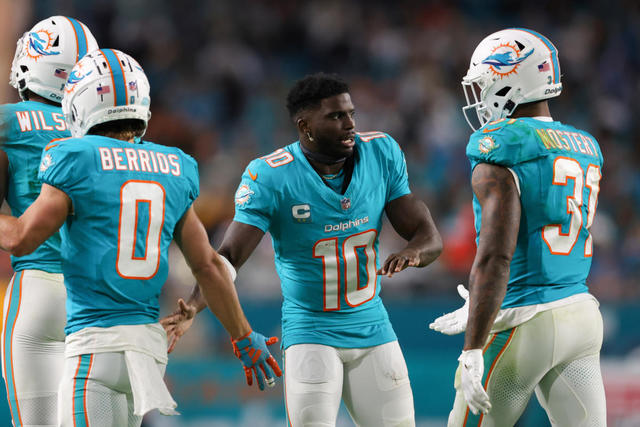
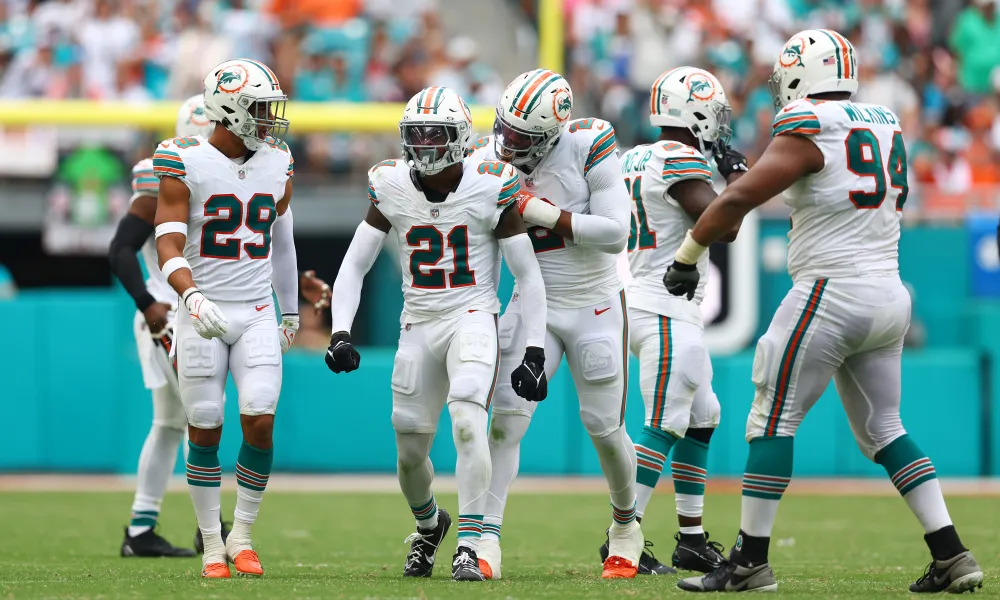
 ×
×
Video Editing
I started editing videos back in like 2016 but for fun. After that i didn't really do it much until 2020 when me and my friends decided to make YouTube channels. After that I found multiple editing apps that can help me up my game. After a while I stopped around late 2020 maybe. A friend told me that I should post on TikTok because thats where most edits are at nowadays, so I tried it around August 2021 and I enjoyed it a lot, but after roughly 2 years in 2023, I had kind of stopped. Fast Forward to June 2024, I had gained a passion for editing again and I became consistent with posts. At this point I was at 6.3k followers, then bam, in the Month of July 2024, I had about 6 or 7 videos reach over 100k views, and about 12 over 10,000. This newly-found juice gave me about 4,400 new followers, getting me into TikTok monetization. So now I'm posting daily to hopefully gain lots of money off of TikTok. Here is the link if you'd ever wanna follow: TikTok! Every like, follow and view is greatly appreciated!
 ×
×
Roblox Clothing
Around early 2023, I started learning how to make clothing on Roblox, not knowing it could be transferred to money. After I found out earlier this year, I started piling up sports jerseys to make robux. I made a bunch of NFL, NBA, MLB and even Track & Field wear. I am currently not too far from making money off of that but I enjoy making jerseys, people complimenting & buying my jerseys.
Here is some jersey examples of the NFL's Minnesota Vikings Superstar Wide Receiver; Justin Jefferson, and a bunch of Texas Track & Field Outfits.
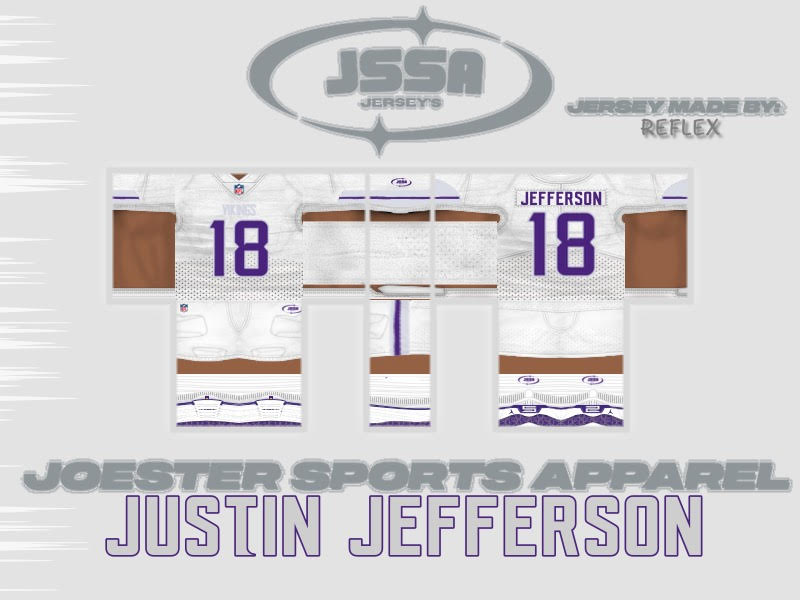
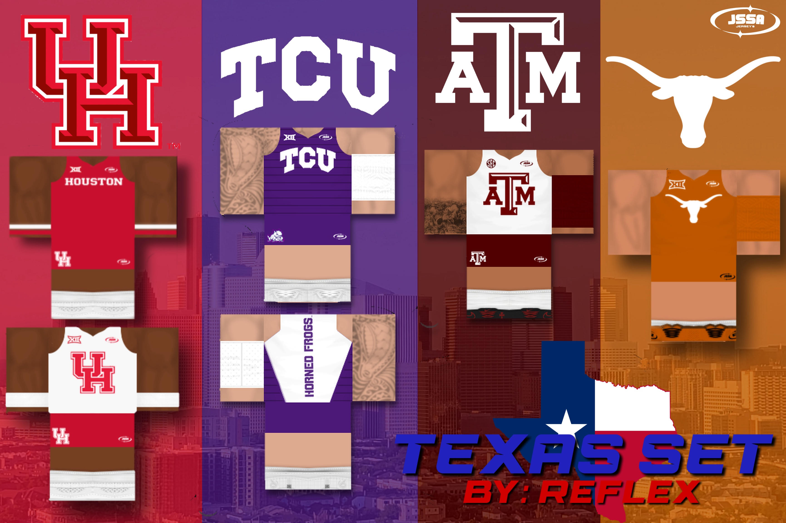
 ×
×
Music
Last year I didn't really listen to much music, but a friend told me to use a Kanye song in a TikTok edit. After that I listened to more of his music. My favorite songs from him are Ghost Town, Burn, and my favorite which is All Falls Down. Here are my favorite albums from him below, The College Dropout and My Beautiful Dark Twisted Fantasy. What makes me love Ye's music so much is his versatility and just overall the quality of the music. It's unfortunate that he doesn't truly have the same love as he did back then.

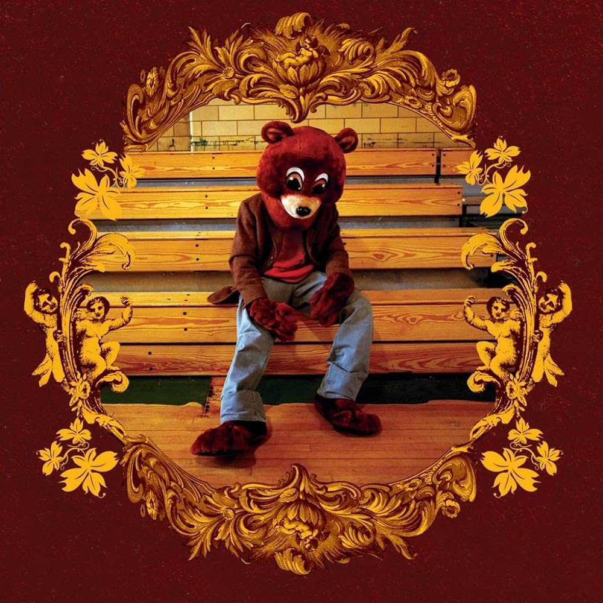
 ×
×
Dragon Ball
Growing up I didn't watch anime, and I still don't much. But my oldest brother introduced me to Dragon Ball, and it really is my favorite anime, not that I've watched much more but thats besides the point. I enjoy the plot in the story and the common battles that happen. My favorite characters are at the bottom; Vegeta and Beerus

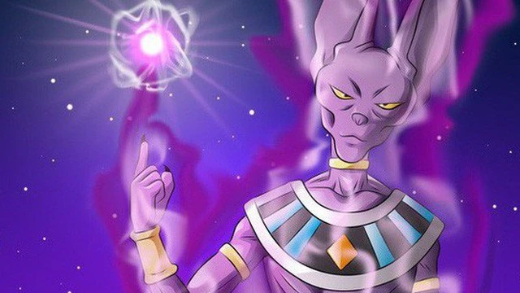